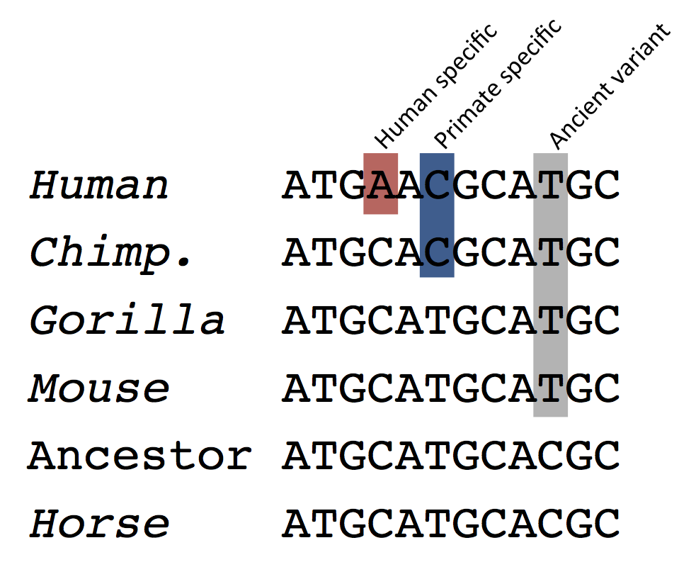

LastZ and its predecessor BlastZ (Schwartz S et al., Genome Res.;13(1):103-7, Kent WJ et al., Proc Natl Acad Sci U S A., 2003;100(20):11484-9) are used to align the genome sequences at the DNA level. The actual whole-genome alignments are the results of post-processing the raw LastZ (or BlastZ) results. In the first step, original blocks are chained according to their location in both genomes. The netting process chooses for the reference species the best sub-chain in each region.
Translated blat (Kent W, Genome Res., 2002;12(4):656-64) can be used to look for homologous regions between more distantly related pairs of species. The rationale is that we expect to find homologies mainly in coding regions. The raw results are passed through a chain and netting procedure similar to that used for the LastZ-net analyses to produce the best sub-chain for the reference species. There are no Translated Blat Net alignments in this release of Ensembl: we use (B)LastZ for all our pairs of species.
In self-alignment analyses, the trivial alignments (i.e. regions against themselves) are removed, such that only the paralogous regions remain.
When both species have a chromosome-level assembly, we summarize the LastZ-net alignment blocks into syntenic regions. We look for stretches where the alignment blocks are in synteny. The search is run in two phases. In the first one, syntenic alignments that are closer than 200 kbp are grouped. In the second phase, the groups that are in synteny are linked provided that no more than 2 non-syntenic groups are found between them and they are less than 3Mbp apart.
Here is the list of all the pairwise analyses that are available, grouped by reference species:
[[SCRIPT::EnsEMBL::Web::Document::HTML::Compara::BlastZ]]Pecan is used to provide global multiple genomic alignments. First, Mercator is used to build a synteny map between the genomes and then Pecan builds alignments in these syntenic regions.
Pecan is a global multiple sequence alignment program that makes practical the probabilistic consistency methodology for significant numbers of sequences of practically arbitrary length. As input it takes a set of sequences and a phylogenetic tree. The parameters and heuristics it employs are highly user configurable, it is written entirely in Java and also requires the installation of Exonerate. Pecan source code.
[[SCRIPT::EnsEMBL::Web::Document::HTML::Compara::format_wga_list(PECAN)]]The EPO (Enredo, Pecan, Ortheus) pipeline is a three step pipeline for whole-genome multiple alignments. Enredo produces colinear segments from extant genomes handling both rearrangements, deletions and duplications. Pecan, as described above, is used to align these segments. Finally, Ortheus is used to create genome-wide ancestral sequence reconstructions. Further details on these methods can be found at:
Ancestral sequences are inferred from the EPO multiple alignments using Ortheus. Ortheus is a probabilistic method for the inference of ancestor, a.k.a tree, alignments. The main contribution of Ortheus is the use of a phylogenetic model incorporating gaps to infer insertion and deletion events. Ancestral sequences are predicted for each node of the phylogenetic tree that relates the sequences. Each ancestral sequence is named according to the derived extant species. For example, a sequence named Hsap, Ptro, Mmul corresponds to the ancestor of the Homo sapiens, Pan troglodytes, and Macaca mulatta genomes.
Due to difficulties with running Ortheus on the low coverage genomes, we have two flavours of the pipeline. First, the plain EPO pipeline is available on the high coverage genomes:
[[SCRIPT::EnsEMBL::Web::Document::HTML::Compara::format_wga_list(EPO)]]The low coverage genomes are then projected onto the high coverage EPO alignments using (B)lastZ-net alignments:
[[SCRIPT::EnsEMBL::Web::Document::HTML::Compara::format_wga_list(EPO_LOW_COVERAGE)]]Progressive-Cactus is a next-generation aligner that stores whole-genome alignments in a graph structure. Genomes can be added incrementally, which makes it scalable to hundreds of genomes. Further details on these methods can be found in Algorithms for genome multiple sequence alignment and Cactus graphs for genome comparisons. [[SCRIPT::EnsEMBL::Web::Document::HTML::Compara::format_wga_list(CACTUS_HAL)]]
From those ancestral sequences, we infer the age of a base, i.e. the timing of the most recent mutation for each base of the genome. Each position of the genome is compared to its immediate inferred ancestor, then its ancestor, etc. until a difference is found. The inferred substitution event therefore occurred on a specific branch of the tree, which is identified by all the extant species which eventually descended from that branch, as illustrated below.
This track is currently only available for the human genome.